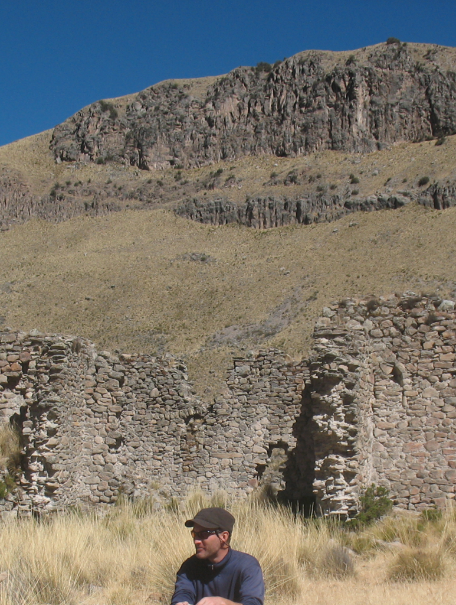
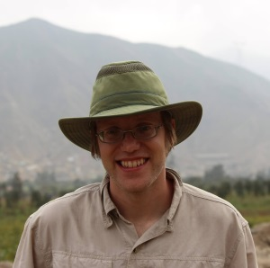
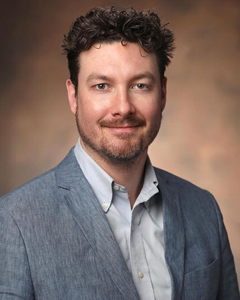
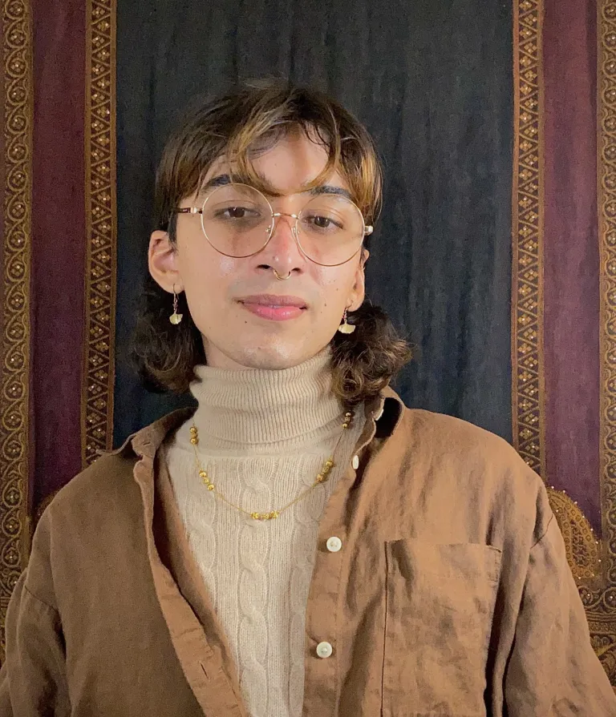
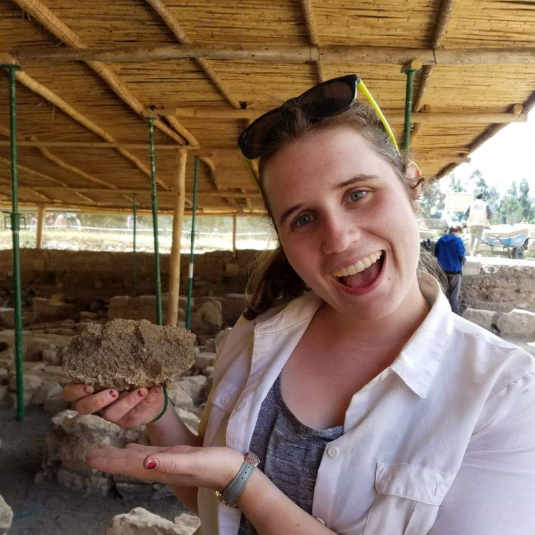

Team
SARL Director

Steven Wernke (website) is an archaeologist and historical anthropologist of the Andean region of South America. His research interests center on indigenous experiences of colonialism on both sides of the Spanish invasion of the Andes. In this era of transformation and trauma, new kinds of communities, landscapes, and religious practice emerged out of successive attempts by the Inkas and the Spanish to subordinate, exploit, and remake Andean societies. To understand these processes holistically, his work integrates analyses of archaeological, documentary, and ethnographic information within encompassing spatial frameworks. His current research themes include large scale characterization of Andean settlement and land use, and understanding the mass resettlement of the indigenous communities of the Andes during the Reducción General de Indios (General Resettlement of Indians) of the 1570s, when about 1.4 million native Andeans were forcibly resettled into over a thousand planned colonial towns around the viceroyalty of Peru.
On the first research theme of large-scale patterns of settlement and land use, Wernke leads collaborative digital archaeology projects for imagery-based archaeological survey, and for collating archaeological, historical, and ethnographic data. Together with Akira Saito (National Museum of Ethnology, Japan) and Parker VanValkenburgh (Brown University), these projects have developed two platforms: the Linked Open Gazetteer for the Andean Region (LOGAR) and the Geospatial Platform for Andean Culture, History, and Archaeology (GeoPACHA). LOGAR is an online gazetteer that enables the compilation of archival and ethnographic information by place. GeoPACHA is a geospatial webapp for AI-assisted systematic survey of high resolution multispectral satellite imagery and historic airphotos across the Andes.
Wernke has pursued the second research theme—the Reducción General de Indios of the late 16th century—using multiscalar research designs: through field-based archaeological investigation of particular reducción towns, and through collaborative interdisciplinary projects aimed at documenting viceroyalty-wide shifts in settlement during the Reducción. Most of Wernke's field-based archaeological research have centered in the Colca Valley, located in Caylloma Province in the southern highlands of Peru, where he has worked in partnership with its communities since 1995.
Wernke also directs the Vanderbilt Institute for Spatial Research, a trans-disciplinary geospatial institute that provides geospatial analytics and geophysical survey solutions for scientific, humanistic, and medical research, and for a range public sector and NGO entities.
Research Staff
Natalie Robbins (PSM, Tennessee Tech, 2018) is a research analyst with SARL, and the Program Manager of the Vanderbilt Institute for Spatial Research. She holds a BS in Environmental Science from the University of Arizona and a Professional Science Master's (PSM) from Tennessee Tech University. Her masters research focused on integrating remote sensing and geologic mapping to understand the formation processes of terraced fan features on Mars. Natalie has a broad background in GIS, remote sensing, and geologic sciences, with expertise in multispectral image analysis, spatial statistical analysis, and spatial modeling. She is particularly interested in environmental applications of GIS and the implementation of novel informatics techniques.
Current Postdoctoral Fellows

James Zimmer-Dauphinee is a postdoctoral fellow in SARL, through funding provided by the GeoPACHA 2.0 Grant from the National Endowment for the Humanities. Dr. Zimmer-Dauphinee is an archaeologist interested in technological and spatial analytic applications in archaeology with a focus on geophysical methods and spatial modeling. His current research develops and deploys deep learning models for large-scale autonomous archaeological satellite imagery survey. His research uses AI and other technologies to develop an anthropological understanding of the impact of colonization on the distribution of political and economic power and the use of space by indigenous peoples. He holds a PhD in Anthropology from Vanderbilt University (2023), an MA in Anthropology from the University of Arkansas (2014), a BA in Anthropology, and a BS in Mathematics from Georgia Southern University (2011). His masters thesis used Electrical Resistivity Tomography to explore sub-surface structures of the tallest prehistoric mounds in Arkansas. He has done field work across the Southeastern United States, at the Gault site and throughout the Middle Missouri region of South Dakota, and in coastal Peru. In 2015, he worked as the Regenstein Collection Research Assistant for the Field Museum of Natural History, utilizing social network analysis and spatial modeling to understand the relation between linguistic variation and material culture in New Guinea.
Former Postdoctoral Fellows

Giles Spence Morrow, PhD (University of Toronto) is a postdoctoral scholar in SARL, through funding provided by the Office of the Chancellor. Dr. Morrow is an anthropological archaeologist focused on the dynamics of state formation, social complexity, and human-environment coupled systems over long timespans in the Andean region of South America. His Social Sciences and Humanities Research Council (SSHRC) funded graduate work at McGill University, Montréal and the University of Toronto employed quantitative computational approaches to the study of architecture and urban planning at the ancient sites of Tiwanaku, Bolivia and Huaca Colorada in the Jequetepeque Valley of Peru. Dr. Spence Morrow's current work integrates emerging spatial technologies into archaeological fieldwork through the use of three-dimensional recording techniques at various scales of investigation ranging from regional topographic mapping using drones, site-level photogrammetric recording, to high-resolution three-dimensional modelling of recovered artifacts using structured light scanning. His research as a DSI Postdoctoral Fellow will innovate in several areas in computational archaeology and span multiple scales of analysis, from the interregional scale of settlement networks in ancient empires to the affordances of the built environment at the scales of individual subjects and communities. At each of these scales, these projects will work toward producing public facing and standards-based data sets, systems, and analytics exploiting fully immersive room-scale virtual and augmented reality environments. Projects utilizing these emerging interfaces will allow researchers to engage with spatial data in powerful new ways, from regional aerial surveys, to interactive photorealistic site and artifact models.
Justin Dunnavant, PhD (University of Florida) was an Academic Pathways Postdoctoral Fellow at Vanderbilt University's Spatial Analysis Research Laboratory from 2018-2021. He is currently Assistant Professor of Anthropology at the University of California, Los Angeles. He holds a BA in History and Anthropology from Howard University and an MA and Ph.D. from the University of Florida. His current research in the US Virgin Islands investigates the relationship between ecology and enslavement in the former Danish West Indies. Justin has conducted archaeological research in US Virgin Islands, Belize, Jamaica, Ethiopia, Tanzania, Mozambique, and The Gambia. As a regular participant in Diving with a Purpose's Maritime Archaeology Training Program, Justin is developing his skills in maritime archaeology. Working with DWP, he has assisted with the documentation of the Slobodna and Acorn wrecks as well as the search for the slave ship, Guerrero. In addition to his archaeological research, Justin is co-founder and President of the Society of Black Archaeologists, an AAUS Scientific SCUBA Diver, and consults for the Smithsonian's National Museum of African American History and Culture.
Current Graduate Students

Connor Sutton is an archaeologist interested in the value systems and cosmopolitical relationalities underlying social organization, monumentalism, and place-making in the Andes. They hold Bachelor of Science degrees in Anthropology and Computer Science from the University of Kansas. As an undergraduate, Connor researched the organizational forms of Moche societies which allowed for their rapid, flexible, and large-scale transformations in the 7th century AD. They have participated in fieldwork on the coast and in the highlands of northern Peru.

Samantha Turley is an archaeologist interested in the disruption and production of power in the early colonial Andes, particularly through the lens of architecture and theories of practice. Samantha holds a Bachelor of Arts degree from the University of Rochester in Archaeology, Technology, and Historic Structures and a Bachelor of Music from the Eastman School of Music. Her undergraduate research was on the the digital reconstruction, structural analysis, and historical significance of Elmina Castle on the coast of Ghana. She has worked at various archaeological sites throughout New England, Ghana, and Peru.